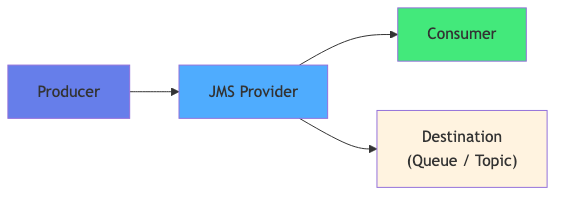
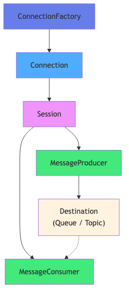
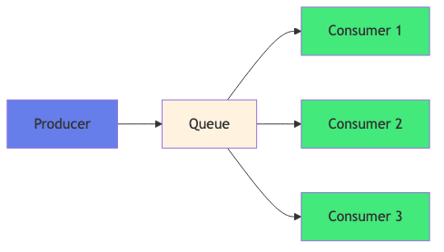
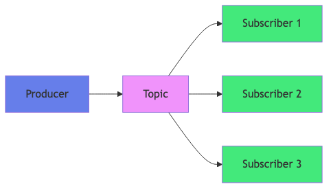
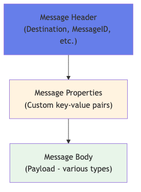
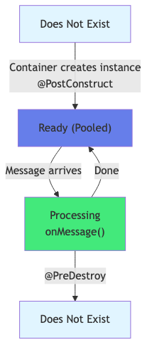

Course Content
All sections — click a title to expand.
📨 Enterprise Messaging — Why?
The limits of direct calls
Synchronous calls (REST, EJB Remote) create tight coupling between services: the caller must wait for the response, and a failure of the target service blocks the entire chain.
- Tight coupling — the sender knows the address and contract of the receiver
- Required availability — both services must be active simultaneously
- Limited scalability — scaling one service directly impacts the other
- Cascade risk — a failure propagates instantly
Enterprise messaging: benefits
- ✅ Loose coupling — services communicate via a broker without knowing each other directly
- ✅ Asynchronous communication — the sender does not wait for the receiver's response
- ✅ Resilience — messages are persisted; if the consumer is unavailable, messages wait for it
- ✅ Temporal decoupling — sender and receiver don't need to be active at the same time
- ✅ Load smoothing — the broker absorbs traffic spikes
- ✅ Traceability — messages can be replayed, archived, audited
Jakarta Messaging vs Direct Calls
| Criterion | Direct Call (REST/EJB) | Jakarta Messaging |
|---|---|---|
| Mode | Synchronous — blocking | Asynchronous — non-blocking |
| Coupling | Tight — known address | Loose — via broker |
| Availability | Required on both sides | Independent |
| Resilience | Failure propagation | Isolation and retention |

🏗️ Jakarta Messaging Architecture
Jakarta Messaging (formerly JMS) defines a standard API for asynchronous message communication via a message broker.
Main components
- ConnectionFactory — connection factory, configured in the application server (JNDI). Entry point for creating connections or a
JMSContext - Destination — message target:
Queue(Point-to-Point) orTopic(Pub/Sub) - Connection — physical connection to the broker (handles authentication, pooling)
- Session — transactional context for sending and receiving messages
- MessageProducer — creates and sends messages to a Destination
- MessageConsumer — receives messages from a Destination (synchronous or async)
- Message — unit of data exchanged — body + headers + properties
JMSContext — Simplified API (Jakarta Messaging 2.0+)
Jakarta Messaging 2.0 (Jakarta EE 7+) introduced JMSContext, which combines Connection + Session into a single injectable object via @Inject.
@Inject JMSContext jmsContext— direct injection into a CDI beanjmsContext.createProducer().send(destination, body)— send in one line- Automatic connection management by the container

📥 Point-to-Point (Queue)
The Point-to-Point model uses a Queue: each message is consumed by only one consumer.
Characteristics
- One message → one consumer — even if multiple consumers listen on the same Queue, each message is delivered to only one
- Delivery guarantee — messages are persisted and wait until consumed
- Persistence — messages survive broker restart (persistent messages)
- Acknowledgement (ACK) — the broker waits for an ACK from the consumer before deleting the message
- Natural load balancing — multiple instances of the same consumer share the load
- FIFO order — messages are generally consumed in arrival order
Typical use cases
- E-commerce order processing
- Job queue — email sending, report generation
- Microservice integration (order → stock → billing)

📡 Pub/Sub (Topic)
The Publish/Subscribe model uses a Topic: each message is broadcast to all active subscribers.
Characteristics
- One message → multiple subscribers — each subscriber receives a copy of the message
- Broadcast — ideal for notifying multiple systems of the same event
- Non-durable subscriptions — the subscriber must be active at publish time to receive the message
- Durable subscriptions — the broker retains messages for temporarily disconnected subscribers
Durable vs Non-Durable
| Type | Subscriber offline | Use Case |
|---|---|---|
| Non-durable | Messages lost | Real-time notifications, logs |
| Durable | Messages retained until reconnection | Critical notifications, audit |
Typical use cases
- Business event notifications (account creation, order placement)
- Cache synchronization between instances
- Publishing stock quotes, real-time metrics

📄 Jakarta Messaging Message Types
Jakarta Messaging defines 5 message types, each suited to a particular content type.
The 5 types
- TextMessage —
Stringbody; ideal for JSON, XML, plain text. Most commonly used in practice. - ObjectMessage —
Serializablebody; transports a serialized Java object. Avoid for inter-application use (tight coupling) - MapMessage — key/value pairs (
String → primitive); named field access, portable - BytesMessage — byte array body (
byte[]); for binary data (images, files, custom protocols) - StreamMessage — stream of Java primitive types written and read sequentially
JMS headers
JMSMessageID— unique identifier generated by the brokerJMSDestination— target Queue or TopicJMSDeliveryMode—PERSISTENTorNON_PERSISTENTJMSPriority— delivery priority (0–9, default 4)JMSExpiration— message expiration dateJMSCorrelationID— to link a response to its request (request-reply)
Properties and selectors
Properties are arbitrary application metadata (String, int, boolean…) attached to the message via message.setStringProperty("key", "value").
Message Selectors allow consumers to filter messages based on their properties, using SQL WHERE-like syntax: "transferType = 'INTERNATIONAL' AND amount > 1000".
⚙️ Producers and Consumers
Jakarta Messaging 2.0 dramatically simplifies the API with JMSContext — a single interface replaces Connection + Session.
Producer with JMSContext
@Inject JMSContext jmsContext— direct injection into a CDI bean@Inject @JMSConnectionFactory("jms/cf") ConnectionFactory— JNDI factoryjmsContext.createProducer().send(queue, textMessage)— simplified send- Producer options: priority, TTL, delivery mode, delay
Synchronous consumer
jmsContext.createConsumer(destination).receiveBody(String.class)— blockingreceiveBody(String.class, timeout)— with timeout in ms- Avoid in servlets / EJB (threads managed by the container)
Asynchronous consumer — MessageListener
- Implements
MessageListenerwithonMessage(Message msg) - Called automatically by the container on each new message
- Non-blocking — the thread is freed between messages
Request-Reply pattern
- The sender sets
JMSReplyTo(temporary Queue) andJMSCorrelationID - The receiver sends its response to the
JMSReplyToQueue - The sender consumes the response by filtering on
JMSCorrelationID

🤖 Message-Driven Beans
Message-Driven Beans (MDB) are EJBs triggered automatically by the arrival of a Jakarta Messaging message. They are the standard way to consume messages in Jakarta EE.
@MessageDriven annotation
@MessageDriven(activationConfig = {...})— configures the MDB's Jakarta Messaging subscription@ActivationConfigProperty(propertyName="destinationType", propertyValue="jakarta.jms.Queue")@ActivationConfigProperty(propertyName="destination", propertyValue="jms/transferQueue")@ActivationConfigProperty(propertyName="messageSelector", propertyValue="...")— message filter
MDB lifecycle
- Does Not Exist → Pooled — the container creates a pool of MDB instances on startup
- Pooled → onMessage() — an instance is selected and the method is invoked
- After
onMessage(), the instance returns to the pool @PostConstructand@PreDestroyare supported
CDI injection in an MDB
@Injectworks in an MDB as in a Session EJB- Application services (BankingService, NotificationService…) are injectable
- No conversational scope — the MDB is stateless
Topic MDB (Pub/Sub)
destinationType = jakarta.jms.TopicsubscriptionDurability = "Durable"— for durable subscriptionsdurableSubscriptionName = "myDurableSub"— unique subscription nameclientId = "myClientId"— client identifier for durability
🔐 Jakarta Messaging Transactions
Transaction management is critical in enterprise messaging to guarantee that a message is processed exactly once.
CMT by default in MDBs
- The container starts a transaction before
onMessage()and commits after its normal return - The transaction covers both the JMS ACK and JPA/DB operations
- Guaranteed atomicity: if the DB fails, the message is re-queued
Rollback and redelivery
- On exception, the transaction is rolled back and the message is redelivered by the broker
- The number of attempts is configurable (
maxRedeliveryCountproperty) - After N failed attempts, the message is sent to the Dead Letter Queue (DLQ)
Poison Message Detection
- A poison message is a message that systematically triggers an exception, causing an infinite redelivery loop
- The DLQ breaks this loop by isolating the failing message
- Strategy: inspect the
JMSXDeliveryCountheader inonMessage()
Dead Letter Queue
- Dedicated queue receiving unprocessable messages after exhausting all retry attempts
- A dedicated MDB (DLQ Handler) consumes this queue to alert, log, fix or archive
- Prevents silent message loss

🏆 Jakarta Messaging Best Practices
Message design
- ✅ Prefer TextMessage with JSON — interoperable, readable, versionable
- ✅ Keep messages small — include only the identifier and essential data
- ✅ Include a timestamp and a correlationId in the JSON body
- ⛔ Avoid
ObjectMessagebetween different applications — Java-to-Java coupling
Selectors for filtering
- Use JMS selectors to route messages to specialized MDBs
- Selectors are evaluated broker-side — reduce network traffic
- Example:
"transferType = 'INTERNATIONAL'"on a shared Queue
DLQ management
- Always configure a DLQ for each important application Queue
- Deploy a DLQ Handler MDB that alerts and logs in real time
- Provide a replay tool to re-inject corrected messages
Monitoring and performance
- Monitor Queue depth (
queueDepthmetric) - Configure the MDB pool (
maxEndpoints) according to load - Avoid long operations in
onMessage()— delegate to an async thread if necessary
MicroProfile Reactive Messaging — Modern Alternative
For microservices, MicroProfile Reactive Messaging (with SmallRye) offers a simpler annotation-based model with @Incoming and @Outgoing, supporting Kafka, AMQP, and other brokers without JMS infrastructure.
Open Liberty configuration
- Enable features
messagingClient-3.0,mdb-4.0,wasJmsClient-2.0inserver.xml - Declare
jmsActivationSpec,jmsConnectionFactory,jmsQueue,jmsTopic - Use consistent JNDI names:
jms/transferCF,jms/transferQueue,jms/dlq